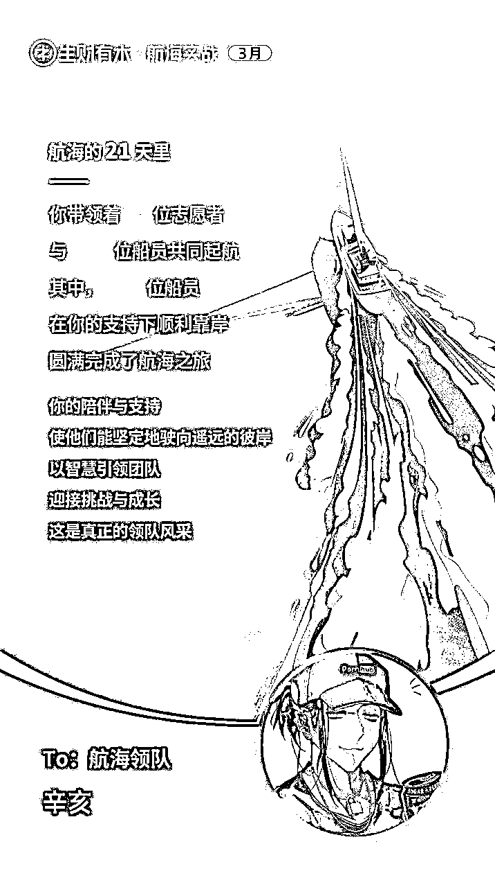
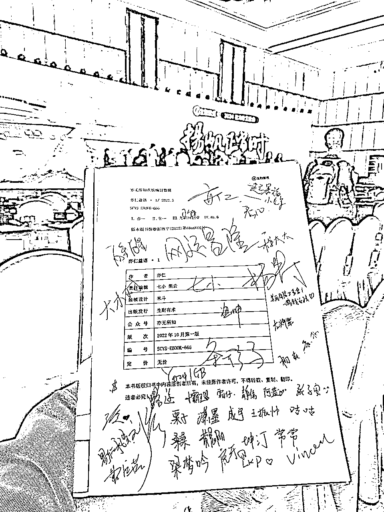

来源：https://ipjk6u8gkk.feishu.cn/docx/WFd1dw9sAoFiq3xLztFcSF0dnMb
大家好，我是辛亥，03 年出生的，今年读大三，做的业务是 AI 绘画+小说推文方向，跟我的合伙人小川一起，目前矩阵号粉丝量达 50W+，做的最成功的账号被写进了生财小说推文航海手册当成对标。我平时在星球里发帖不多，主要是大佬太多了，我虽然也是 00 后，但是远不如其他 00 后来的耀眼，所以一直不敢说话。不过一直有在生财的航海做志愿者/领队的工作，所以大家可能会眼熟我，哈哈。
写这篇文章是起初是鱼丸的约稿，想让我写一个这一年在生财的收获和成长，聊聊我这一年的组局经历。刚好想着我还没写过我来生财这几年的复盘，借这个机会，写一个复盘，希望大家能有所收获。
这个故事有些关注我的朋友应该听我讲过，每次跟生财的朋友们聊到这个话题，各种场合，我都会感谢这位带我进入生财的贵人，不为别的，只为滴水之恩，涌泉相报。
那会儿我刚高中毕业，机缘巧合的情况下看见了西琳君【现在叫西猫仁】那篇非常出名的 7 颗龙珠召唤神龙的亦仁咨询，这应该是全生财第一个分享自己与亦仁对话的复盘，最后共享给大家的前辈。
【知识星球】链接：https://wx.zsxq.com/dweb2/index/topic_detail/815251285585242
【公众号】链接：https://mp.weixin.qq.com/s/XIOHauYjxwesDQQq6KfVXw
因为这篇文章我认识了前辈西琳君，那时还不知道什么是钩子，只是顺着公众号加上了微信，那时候说话非常小心翼翼，姿态很低，但提问又显鲁莽，什么都敢问，对这个世界充满了好奇。西琳君是一名龙珠圈友。那时候的我对生财，对龙珠，几乎完全没有认知，并没有加入生财，但是非常有幸，西琳君当时提出说要送我一张门票，
这对当时我的而来说，一个陌生的人，一个来路不明，不认识，不清楚底细的人，居然愿意给一个他也只是刚聊几句的陌生人花几千块钱，这对于一个刚结束一段除了高考啥也不知道的我来说，是天大的馈赠。
这也是我对生财的价值观：真诚，利他。最早，最直观的感受。
也是我认为，生财对我影响最大的价值观，我的生财第一堂课。
当时的我，清晰的意识到，这是一个我短短人生开头，所做的一个很大的决定，能影响到我人生轨迹的那种。
我先是同意了，但是斟酌再三我还是没有收下前辈的好意。因为我觉得，自己还太小白了，需要至少先经过一年的学习和历练，稳扎稳打的锻炼自己的能力，不然进了生财也会是迷茫和焦虑。不像现在第八期，生财有这么多这么好的新人指南和生财思维课，手把手的带大家度过新手期，升级打怪。
虽然我最后，觉得自己还不够生财的认知，没有资格接受前辈的好意，但是我一直记得这位前辈对我的帮助，也一直在各种场合表示我对这位前辈的感谢。比如我在江西生财年会的分享上，哈哈。这点感兴趣的朋友我们后面再聊。
每当我跟人聊起我的结缘生财的故事，我都会反思自己，为什么是我？，是因为我 03 年出生，刚高中毕业时间段比较特殊么？也许有的，但进入生财这么久，跟很多人打过交道后我还是觉得，是因为那时候的我更贴近平等的心态，没有想着巴结他人，更没有自我设限，不敢与厉害的前辈交流，觉得没有提供属于我的价值，或者没有给大佬打钱，就不敢顺着别人留下来的路径加上微信，开口说话。
那时候的我如同没穿衣服一般，是最真实的自己，不巴结，也不带任何目的，只是把对方当成一个平等的人来交流。这一点其实很重要，因为我们很容易陷入害怕不敢的畏难情绪里去，很多你不敢做的事，其实试一试，说不定就有了。这又回到生财教给我的第一堂课里的——真诚。二字 。以及生财里很流行的一句口号：试试看，成本不大。
所以，如果说我有什么结识前辈大佬的建议，那我会说
这里其实说的有点夸张了，哈哈，并不是每一个圈友都认识我，但是我相信，应该很多人都听说过我的名字。我也经常碰见很多我没印象，但是他说他知道我的人
我曾经做过这样一件事，就是把我感兴趣的人的帖子都刷了一遍，给他们点赞。看看他们都有哪些发言，这样我能大致的判断出来他是做什么的，有哪些优质的信息，从 ta 的文笔当中了解这个人大致是一个怎样的人，性格调性是怎样的。如果很有收获的话，就可以看看他的关注列表里都有谁。
由一个点散开去看，你会惊讶的发现，这些点会互相交叉验证，这样你就能知道，哪些人是真正厉害的人了，交点多的地方，就是你该学习的地方，也是更有价值的地方。
这个动作非常简单，我来模拟一遍流程：其实就是在你无意中点进一篇吸引了你的兴趣的精华帖，比如说，你刷到了一篇涛哥的【什么是网感】刷完之后，意犹未尽，遂点进涛哥的主页，发现，他还写了别的帖子，比如【平民开店手册】之类的（这里推荐涛哥的这两篇神一般的帖子）。
然后再看他在生财有术的各种发言。以及其他你能看见的各种发言。你就会知道，啊，原来涛哥是这么一个神人，他的帖子我们一定要看，他的微信，我们也一定要加。
然后，第二个重要的点来了：看大佬的关注列表，还是以涛哥为例子，我们点进知识星球涛哥的主页，查看他关注的人，注意，不要从上往下看，要从下往上看，因为关注列表是按时间倒序排列的。最早的关注在最下面。
比如：
看，这里都是涛哥关注的人，如果你有心了解，就能发现这张截图上的人，都是生财的嘉宾，那就更好办了，他们的发言也是你可以着重学习的范畴。想想看，你是不是就能通过杨涛涛哥这个大节点蔓延下去，发现更多你在生财路上应该结识前辈呢？
不过，需要提醒的是，现在各种免费的付费的知识星球太多了，只要你加入了这个星球，就会默认关注这个星主，这里要注意分别。交叉验证
这里我讲个我认识黄亮大黄哥，HEXIN 老师的故事，也跟点赞帖子有关
之前知识星球有一个年终总结，有一条总结是讲这一年，给你的帖子点赞最多的人是谁。那时候在龙珠俱乐部【现在航海家俱乐部的前身】里，黄亮大黄哥和 HEXIN 老师的帖子点赞最多的人都是我，不过那会儿我没在龙珠俱乐部里，所以没能直接加上好友。但是我确确实实通过这种办法引起了两位前辈的注意，而且起码在他们那里留下了至少爱学习的一个好印象。能让别人对你有正向印象的行为不多，这是非常有效的一种。能与两位前辈结识，非常有缘
当然，这里还要感谢梁靠谱，靠谱姐的牵线搭桥，把我的名片推了过去，让我有机会被动链接了两位非常厉害的老师。
对不对，这些事情其实执行起来非常简单，且深有成效，刷帖这个姿势刷，我觉得是更为高效的。
换个角度，如果你不是从星球帖到主页，到关注的人列表。还可以从咱们生财有术的嘉宾列表里看他们的历史发言和关注的人，这让你能对过往至少 5 年内的生财发展史，甚至早前一点的互联网都会有一个初步的了解。
说实话，这样的认知财产，我觉得非常非常宝贵。你很少能有不惊动他人的情况下知道如此多宝贵的往年互联网大佬们留下来的宝贵经验与认知财富。鉴别什么是真正具有价值，什么是包装出来的价值，会更有自己心里的一杆秤。
好，说到这里，我们思维发散一下，如果你对信息的捕捉够敏锐，这个方法其实还可以用在更多的互联网平台上，比如国内的即刻，国外的推特【或者叫 X】。相信我，你就按照我说的这个方法去刷贴，看主页，看前辈。能让你兴奋一整个星期，一整个月，甚至一整年。在这个过程里，你会了解到非常多的海量信息，认识非常多非常多的人，咱们胖大魔老师就是一个很好的例证。
当然，也许你会变得很焦虑，但是我想告诉你的是，请你再看看我一开始说的，西琳君的帖子吧，那里会让你有明确的答案。
就像亦仁说的那样，先聚焦一个目标，赚到钱了之后你才有更多的选择权。
如果不知道怎么行动，那就别忘了跟上航海实战，生财社群里对于 0 基础的普通人来说最有价值的地方。
破圈我做的第二件事情就是，参与航海实战。多多参与，很有好处，建议有空多去参加一下。当然，你不要学我，只看小红书的，咱们生财有非常多的项目，非常多的航海，跟紧你最感兴趣的，就可以了。因为在航海里，你能认识很多志同道合的朋友。
很多人都是抱着同一个想法来参加航海的，就是想通过航海的手册来帮助自己完成项目上的从 0 到 1 的积累。而且航海手册也做了很多改版，有面向小白 0 基础的圈友的，也有面向有一定基础，想提高自己的销售额或者特定能力的版本，非常友好。这里的精华程度吊打外面一切割韭菜的课程，甚至有些都是抄袭的生财的。圈友们，守好生财就是守好金库呀！
这是我参与的往期航海，算下来有差不多十期了，去年生财第 7 期的航海，我一期没落下，去年一整年的航海我都全勤了，航海实战要是有全勤奖励，我真该申请一个，哈哈。
也许你看图片会有一个疑问，我参加航海为什么没打卡，是因为钱多给生财送保证金来了么？不是，因为很多期的航海我都是做的志愿者/领队/分享官的角色。

也算经历和见证了航海实战模式的不断改版，还有海报的改版，不知道你们觉得哪个更好看，哈哈哈。
牛逼吹完，我划个重点，身为志愿者的重点
志愿者在生财里是非常重要的角色，没有志愿者的话，生财的发展不会如此迅猛。如果你想要破圈，我建议你一定要来生财做至少三次志愿者。
为什么呢，因为你需要跟官方靠近。
大家不要小看这个“志愿者”的身份，以为不就是在帮别人打工嘛，可是这个别人很特别，你在给官方打工。你的每一次实战活动都是以官方的身份出现，你的链接也会变得更加丝滑。起码，作为一个没圈子，没人脉，没资源，没渠道的“四没”青年，你能够借助平台的势，借势破圈。一些你可能平时链接不到的大佬，不能给人家提供价值，但是有了官方的身份，一切都能顺理成章。且不说能不能与大佬们产生深度链接，价值交换，起码，加上了微信，你们才有了链接的可能性。哈哈，不过夹带私货这种行为是不允许的哈，而且这样的行为只会让你把路走窄了
何况，志愿者也是来自五湖四海的行业精英，圈友就更不用说了。你能认识很多厉害的人，想寻求各类信息的先进性，不用等新闻推送，直接看他们的朋友圈就好了。
长期浸润下来，这又是一笔认知和视野上的收获。
同时 ，在身份上，向其他人自我介绍自己是某某社群的线上团队成员，也有助于大家更好的认识你，记住你，会增强对你的认同感，你也方便用这个身份认识更多的人。不信你试试，非常丝滑，屡试不爽。
所以从大的方向上来讲，我的总结就是，靠近官方，借势破圈。因为只有靠近官方，你才有更多更大的展示舞台。
就像涛哥的那句非常经典的话，没有慧根，就要会跟，不跟着官方，你跟谁呢？
当然，从生产者视角看，靠近官方还有一个好处，就是近距离的看一个好的社群，他是如何运营起来的，是如何拉动社群活跃度，如何带动更多的人参与活动，如何建立这个社群的统一的，稳定的，高认同感的价值观的。以及，如何维护好一个社群的秩序，实现这个社群的初心和使命的。大家有做社群生意的老板们就可以抽人留意学习一下。很多社群都模仿了生财的航海，这些更细节的点和视角，我估计仅靠你在这个社群，你参与过这个社群的活动，是发现不了的。参与志愿者，不用去外部拆解，直接在内部看到答案。
在做志愿者的过程中，其实能学习到的东西也非常多，很简单，他提供了一个平台，一个很大的平台，也许你不需要参与航海实战，但在社群运营这块，志愿者可是结结实实的在社群运营这一块儿实战了，一次志愿者，就基本上能把社群运营的基本逻辑给玩透了。这个时候，我们不再是参与者，不是在一个用户的立场，而是在主办方的立场上，运营的细节，工具的使用，与人链接和协调工作的方式方法，都远比你在书本上学来的扎实的多。当然，且不说，咱们还有没有空能不能静下心来看书。哈哈
再高一个层面，就到了如何给自己的社群，搭建一个强大的志愿者军团，或者未来自己想搭建自己的业务团队，该怎么搭建了。生财的这一套志愿者机制，其实非常牛逼的，只不过，能拆解出来多少，大家就各凭本事了。我在参与各个社群做志愿者的过程里，还没见哪个社群能把志愿者妙用到如此地步。
其实，我知道很多圈友，来到生财，会有两个困境，1。高焦虑，2。高预期。这两个是必然相互挂钩的。因为大家进入生财，看见那么多的赚钱案例，那么高的月收入，十几万太少，几十万刚好，几百万不多。有种全中国，甚至全世界的钱都被生财圈友给赚去了的感觉。
但是，这终究是非常小的那么一部分人。我曾经形容自己是个没圈子，没人脉，没资源，没渠道的“四没”青年，所以，有了圈子，有了平台，我们更应该借助平台的势，借势破圈。说不定，一些你平时不敢加，害怕不能给人家提供价值的的大佬，有了官方的身份，你就能顺理成章的加上微信，才有了深度链接的可能，当然，身为志愿者的时候，记得不要夹带私货哈，这种行为会违规的，维护好自己的口碑，守好本心，互联网是有记忆的。
同样，这里我们也可以发散思维，你身边有没有什么别的类似的圈子，你想深入学习这个圈子里的东西，或者想认识更高层次的人脉，都是可以用这个方法如法炮制的。比如我还做了花爷的愚公掘金社群，狗哥的淘金之路社群的志愿者，领队，答疑官等等。这在跟官方的打交道的过程中，你能学习接触到的东西就更多了。我现在认识的人脉资源，百分之 90 以上都是在这些社群里认识的。而且在很多意想不到的的时候起到了非常大的作用
况且，志愿者并不意味着是给生财，给这些官方白打工，其实很多时候，官方都很在意志愿者们的感受和想法，有好的东西先给自己人当然是不会错的，新项目内测，特殊的周边礼品，术值/积分/碎片，或者直接打钱。都有。就拿生财来举例子，志愿者参与一次航海，可以免费参加一期交流类航海，还会有对应的术值奖励，做个两三次，只要做的合格，都能挣回来一张生财门票钱。术值兑换门票，兑换龙珠。都是常有的事。
如果你是大学生，那就更好了，可以借助生财的志愿者锻炼自己的能力，飞书工作协同，社群运营的基本逻辑，剪辑技能的锻炼，这些你都可以借助生财免费提升自己的能力。同时还有机会被人看见。
其实，这些都是题外话，最重要的是，做志愿者，你在生财官方面前，一个靠谱的人设就立住了，这是很不容易的。现在很多割韭菜的镰刀当道，如果你不是一个靠谱的人，那其实小圈子里传起消息很快的，这句话我想再说一遍，互联网是有记忆的，可能你先前积累下的名声很快就会变成两极反转的臭名昭著。这一点我在生财的领队群领略过太多次了，你不管做什么，官方都是看的见的，不要有任何侥幸心理。被前辈知道了，你的上升空间可能就没了。千万千万不要拿自己的前途开玩笑，如果你还想在这个圈子里混下去的话。
好好做事，踏实做人，稳定增长。大道就这么简单。
说到破圈，怎么能落下线下见面会呢？生财第七期我觉得最让我兴奋又难过的就是这个环节了
兴奋在于，我很高兴参加了去年+今年的两次生财线下见面会，收获很多，还参加了江西生财的年会，有幸被年会的发起人路途哥邀请，跟月销千万的盗坤大佬同台给大家做分享。
难过的地方在于，江西生财圈友很多都是老家江西，目前在北上广深杭等外地城市，江西很少有见面会，线下聚会等等这些，我在的地方江西上饶也很少有生财圈友，很难过。我们这一个城市的圈友数量甚至不如广州某大学一个学校的圈友数量多。遗憾呀，落后就得挨打。之后我也想办法来发起一下吧，哈哈。
好的，说回来。我这两年参与线下见面会的的感悟和经验。
我是 22 年 418 进入的生财，所以最早参加的是 23 年的全国见面会，很幸运，因为那是我第一次参与千人级规模的线下见面会。很多时候，圈友都是在线上聊天，交流，最多就是打个电话交流一下，但是大家都素未谋面，但是渴望交流的心是很难抑制的住的。这一点，参与过线下见面会的圈友应该很清楚，所以如果你是一个新圈友，我建议你一定要多参与一下线下见面会，特别是这种大规模的，会有很多意想不到的收获。
不过，请你一定要抱着目的来参与生财见面会，来线下见面会，学习的心态固然重要，但是只有学习的心态，那就完蛋了，因为知识密度爆炸的线下见面会只会让你什么都想学，但又什么都没学到，空带一身热血沸腾回家，转而又陷入更深的焦虑中。
如果你是像我一样，想带着破圈的目的来，那我有三个小技巧可以教你
参与线下见面会的人，每年都很多，但是其实很多人都很社恐。
所以，这里有一层红利，我们常说，表达者有表达者的红利，其实社牛者也有社牛者的红利。更不用说那些线上会表达，线下超社牛的人了，这种人想不破圈都难。
哈哈，我没有涛哥花爷两位帅哥帅，就不放我的照片了。不过我想说的还是那句话，线上聊千遍，不如线下见一面！
跟大家说一个很重要的点，那就是——大佬是很随和的，大佬是很随和的，大佬是很随和的
真的 ，其实很多时候都是我们在心里给自己加了很多戏。以为自己一定要给大佬提供什么价值才能说的过去，不然就一定不加好友，或者不敢说话。
其实这是很错误的想法，因为你认识大佬，能加上大佬的微信，说明你们至少在同一个圈子里，同一个场域里。在一些价值观上，你们是趋同的。或者说，这是一种身份认同。基于这种身份认同，你并不需要有什么心理负担。大佬其实也是很好说话的。不要怂，就是上。比如参加线下见面会，有机会认识这么多同台的大佬，你是不是觉得一层之前你心里给自己设立的一面墙被打破了。所以，大家要主动来到线下，主动与大佬们线下链接，才有破圈的可能，才有机会来获得贵人相助。
可是如果你社恐了，害怕了，觉得自己太菜了，那也许有一天 你会悔恨的想，那个原先跟你差不多的人，为什么如今跟你大不一样了， 那个你原先平视的人，如今你也只能仰望了。
何为制造惊喜呢？其实有很多办法。这里我讲两个我常用的：
1.主动作为摄影师，给大家拍照，留念。
2.给你喜爱的前辈写明信片，购买 ta 们写的书找前辈给你签名
先讲第一个，主动作为摄影师，给大家拍照，留念。其实这里是赋予自己一个特殊的身份——摄影师。试想一下，你正在参与一场夜话，大家在自我介绍，你在给大家拍照。大家会先入为主给你一个摄影师的身份，那么你在这场自我介绍中会有一个你是摄影师的共识。想在一个至少 20 人的场合里被所有人记住，除非你有特别过人且又不露锋芒的特点，不然很难做到每个人都记得你。但是，当这至少 20 人回忆起那次夜话，一定会记得有一位摄影师。
就像群体面试里的那个主动承担读秒的人一样，你具备一个特殊的身份。能被所有人认识，能被所有人认识。而且，在一个临场的分享环境中，是不会像咱们参加正经大会分享那样，有专门的摄影师来给大家拍照的。这个时候，你带着相机给大家拍照，给分享者拍照，结束之后，再发给分享者，附上一段简短的夜话复盘，这对分享者来说是不是一个非常大的惊喜呢。
第二个，给你喜爱的前辈写明信片，购买 ta 们写的书找前辈给你签名。这个也很好理解，我直接用我的例子来解释这两个制造惊喜的方法吧。
23 年生财线下见面会的时候，我第一次参加夜话，夜话的发起人是球球姐，也就是大家熟知的丁邱洁律师。为了能更好的认识这位生财卷王，我特意买了她的书《创业十日谈》回来看。所以 23 年见面会的时候发现有球球姐发起的夜话，我毫不犹豫的来参加了。
这次夜话，我主动带着我用第一桶金买的相机，为大家拍照，为这个美好的夜晚留下记忆。在自我介绍的环节，成功因为带着相机给大家拍照被认同为摄影师而被大家认识。这就是一个非常好的开始，因为你在他人眼中，就是一个很积极很热心，拥有非常好第一印象的人。
除了相机，为什么还要带书呢？因为我拿着这本书，可以来找作者，来找咱们的球球姐签名，你在这么多人的注视与见证下，拿着前辈写的书，找前辈签名，合影，留念。那不是情绪价值直接拉满嘛。
一本书花不了多少钱，但是，这本书，将会成为你们之间都非常记忆深刻，珍贵，乃至可以成为佳话的故事信条
所以，2024 年航海家见面会，我做了什么，你也就，不得而知了。
大柯老师也给我留下了签名，感恩。

那如果你喜欢的这位前辈目前还没有出书怎么办？
没关系，也很简单。你可以尝试给你欣赏已久的前辈/圈友写一张明信片。以示对他/她的赞赏或者你们之间相识的感恩。
对我来说，我的生财之路上，就有许多人给过我帮助。刚好生财之前的会员日主题是夸夸你的生财好圈友，我想夸夸的人可太多太多了。放个链接在这里：https://t.zsxq.com/K6W5T
如果你有阅读精华帖的习惯，那你一定会有许多个瞬间：被激励、被感动、长见识、有共鸣。给你带来了许许多多的"啊哈"时刻。如果有哪位前辈的文章让你产生了这样的瞬间与时刻。请你一定一定，一定一定要让他知道，向他表示感谢！

这里本来要放一张给条形马，马大爷的明信片，但是我忘了拍照了，哈哈，就留一个之前"考古"马大爷发帖的感言吧，我明信片上也写的这段话～
如果你是一个真诚，利他，乐于分享的人。请你一定要坚持初心，分享你的见闻，分享你的成长，分享你的赚钱飞轮。
这是一件，具有生财基因的事情。
我也会，多多的践行，这个对大家，也对自己的建议。
不用担心你想讲的事情被别人讲了，你想说的内容被别人说了，你学到的东西没有别人更深入，更厉害。古人早有云："闻道有先后，术业有专攻"，多发帖子，多被人看见，多感受生财这个高能量赚钱的场域给你带来的积极的气息。至少点个赞，评论一下，给生财这个社区留下点什么。
做志愿者，还是做志愿者
在《别独自用餐》中作者分享了他年轻时做球童的经历，因为他做球童非常耐心，事无巨细，处处为他人着想。因而被他的雇主推荐，认识了很多其他新的权贵，这段特殊的人生经历，特殊的身份，给作者的未来带了了非常多的好处。同样，因为被推荐，他在与其他权贵接触的时候，锻炼了一双识人的慧眼。
而我在做志愿者的过程中发现，做志愿者这件事，竟然也有异曲同工之妙。通过做志愿者，你能认识很多人，慢慢的你就能看见那些厉害的人都具有什么品质，如同《别独自用餐》里说：“为什么成功的人越来越成功，富有的人越来越富有。”你会看清楚，你会想与什么样人为伍，与什么样的人一起共同成长。
生财真的是我见过的，用好志愿者群体建设生财社区生态做的最厉害的社群，没有之一。身为普通人，如果你想破圈，靠近官方，不做志愿者，我真想不出还能有什么其他的办法。
为什么说，要做志愿者呢？
就拿 2024 年的生财航海家见面会来举例吧。生财想组一场浩浩荡荡的千人局，没有志愿者的帮助是近乎不可能的。这之中的各种调配工作就非常多。生财又是如此贴心的一个社群，为了办好线下见面会，花了很多心思。
其实参加 2024 年的生财航海家见面会，我差点没能参加成。因为见面会那会儿我学校有个考试，刚好跟见面会撞上了，周末的考试，周末的见面会。周四学校里来了通知说考试延期举行。得知消息后我就立马飞去买票了，还好是赶上了参与见面会。事后跟条形马，秀儿，醒醒，牙牙，左烨紫起来这事儿，条形马老师还调侃我说我跟生财有缘，哈哈哈，命中注定要来参加见面会。
虽然航海家见面会我没有报名志愿者，但是本着靠近生财这一条主线，我参与了前台的签到录入工作，给见面会的嘉宾们做签到录入工作，分配房间的任务，哈哈，不少前辈，朋友们的房间都是我分配的。能有一个给大家服务的机会，这种感觉真好！！！
参加航海家见面会的三天两夜，我一直都跟着生财团队，还有志愿者伙伴们，一起帮忙，维护现场秩序、做签到录入、给大家拍照、跟酒店对接、审查身份。认识了很多新朋友。学习到很多新知识。甚至还有幸多了两个跟前辈合作的机会。

感谢，感激，感恩。我们一起，生财有术～
亦仁老师在志愿者感谢宴上，跟我们分享了一个故事。
亦仁老师说，一个名叫 Luke 的人，在他读大学的时候，喜欢逛一个网路电话的论坛，他是一个无名之辈，没有人听说过他，知道他。但是这个论坛里的人，发言都很有价值，Luke 也通过这个论坛里的信息赚到了他的第一桶金，在这个圈子里面，他一开始只是看帖，水贴，后面越水越多，越水越多......
这个时候他做了一件事情——他主动成为了这个社区的志愿者
他帮助这个社区去做一些帖子的管理，做活动的运营。通过这个事情，慢慢慢慢的，他就学会了很多东西。
他慢慢的进入了这个社区的核心圈子，接触到了他所仰望的大佬，看到了很多与他原先接触到的不同的信息。有了很多新的感受，认识了更大的世界
他在管理社区内容，整理帖子的时候，学会了做社群运营。他做社群运营的原点，就是在这个社区里做志愿者。
他在做志愿者管理社区的过程中，又学会了怎么去做引流，他把在这个网路电话上学到的，如何打免费电话的知识，总结起来，放在贴吧等各个地方引流，售卖，赚到了第一桶金。
他在这个社区里面认识了一个非常好的朋友，相逢于微时，囊中羞涩，没有什么钱。虽然相识于线上，但是关系非常好。几年后，他的朋友跟 Luke 说，他发现了一个能赚钱的好机会，一起来研究一下吧
于是，Luke 跟他在这个社区里认识的朋友一起，赚到了人生中的第一个 100W。
命运的齿轮就此转动，一切都起源于一个很简单的想法，他很认同这个社区，想成为这个社区的志愿者，参与建设。回馈他在这个社区里学习到过东西。
Luke，就是亦仁的英文名，这个故事里的 Luke，就是亦仁自己。
从一个组织里面获得成长的最好方式，就是去支持这个组织，跟组织一起成长！
感谢大家的宝贵时间阅读，一起生财有术~